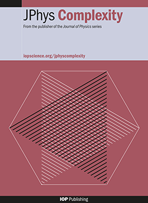
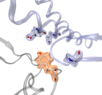
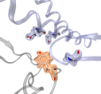
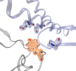
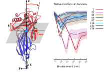
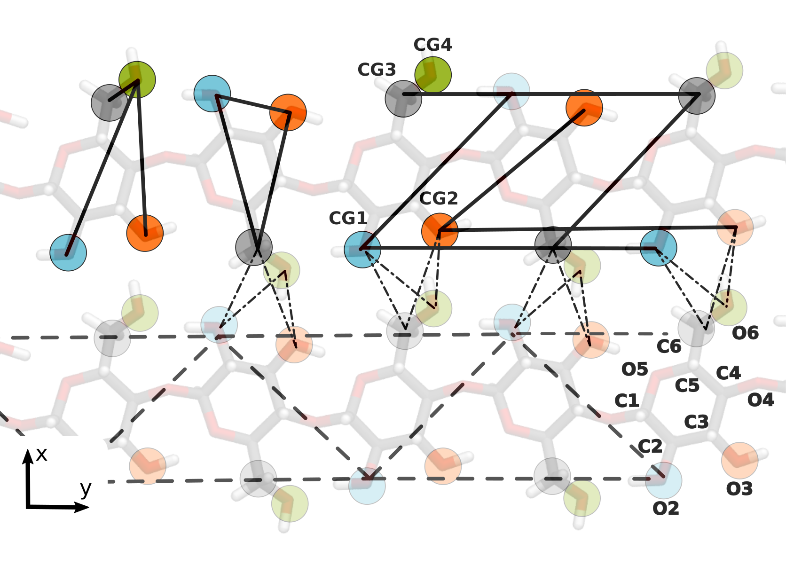
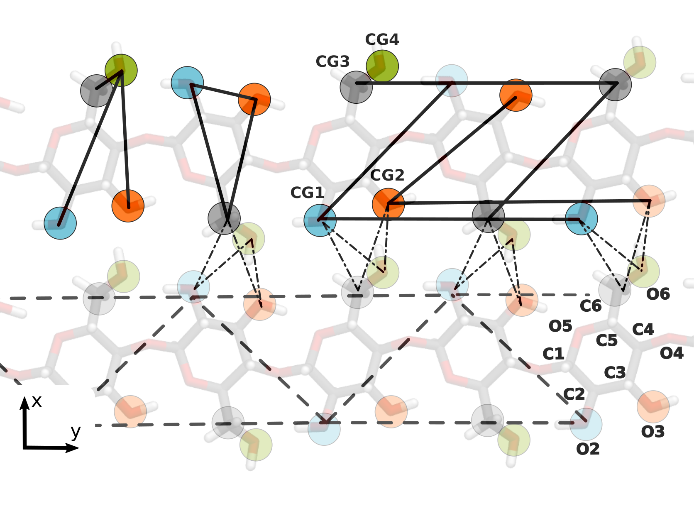
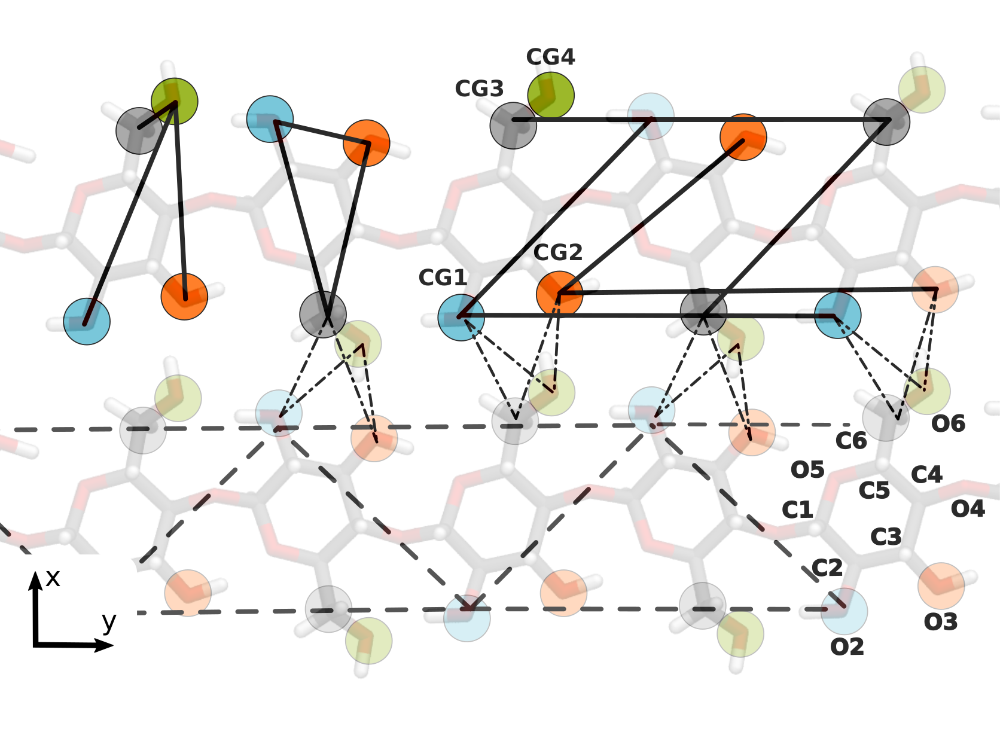
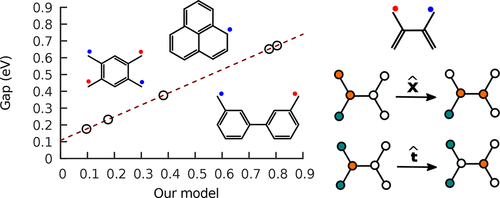

ABOUT ME
Science and Research
Rodrigo A. Moreira
https://orcid.org/0000-0002-7605-8722
ONGOING PROJECTS
Projects I'm participating and recents results!
Long-term Covid-19 Multiphase Persistent Interaction – ikur Strategia - BMTF
- March 2023 - TopMolViewer : Visualization of mathematical properties we're computing directly projected on the coordinates of molecules.
-
- March 2023 - Website now online on Github.
- March 2023 - Beginning of this project.
OUR RESEARCH
Latest research topics. Click on the figures to get the abstracts
Applied Topology, Topological data analysis, Topological energy and dynamics

We use methods and concepts of applied algebraic topology to comprehensively explore the recent idea of topological phase transitions (TPTs) in complex systems. TPTs are characterized by the emergence of nontrivial homology groups as a function of a threshold parameter. Under certain conditions, one can identify TPTs via the zeros of the Euler characteristic or by singularities of the Euler entropy. This work illustrates this possibility by investigating various networks from a topological perspective. We first review the concept of TPTs in brain networks and discuss it in the context of high-order interactions in complex systems. We then investigate TPTs in protein–protein interaction networks using methods of topological data analysis for two variants of the duplication–divergence model. We compare our theoretical and computational results to experimental data freely available for gene co-expression networks of S. cerevisiae, also known as baker's yeast, as well as of the nematode C. elegans. Supporting our theoretical expectations, we can detect TPTs in both networks obtained according to different similarity measures. We then perform numerical simulations of TPTs in four classical network models: the Erdős–Rényi, the Watts–Strogatz, the random geometric, and the Barabasi–Albert models. Finally, we discuss the relevance of these insights for network science.
SARS-CoV-2, Spike Protein, Molecular Dynamics
 

-
DOI: 10.1039/d0nr03969a
- Quantitative determination of mechanical stability in the novel coronavirus spike protein
-
DOI: 10.1038/s41467-021-27325-1
- Molecular insights into receptor binding energetics and neutralization of SARS-CoV-2 variants
-
DOI: 10.3390/ma13235362
- Characterization of Structural and Energetic Differences between Conformations of the SARS-CoV-2 Spike Protein

- DOI: 10.1039/d0nr03969a - Quantitative determination of mechanical stability in the novel coronavirus spike protein
- DOI: 10.1038/s41467-021-27325-1 - Molecular insights into receptor binding energetics and neutralization of SARS-CoV-2 variants
- DOI: 10.3390/ma13235362 - Characterization of Structural and Energetic Differences between Conformations of the SARS-CoV-2 Spike Protein
We study the nanomechanical stability of the SARS-CoV-2 (CoV2) spike (S) protein in comparison with SARS-CoV from 2002 (CoV1). Our findings have several biological implications in the subfamily of coronaviruses, as they suggest that the receptor binding domain (RBD) (∼200 amino acids) plays a fundamental role as a damping element of the massive viral particle's motion prior to cell-recognition, while also facilitating viral attachment, fusion and entry.
Despite an unprecedented global gain in knowledge since the emergence of SARS-CoV-2, almost all mechanistic knowledge related to the molecular and cellular details of viral replication, pathology and virulence has been generated using early prototypic isolates of SARS-CoV-2. We also use atomic force microscopy and molecular dynamics to investigated how these mutations quantitatively affected the kinetic, thermodynamic and structural properties of RBD—ACE2 complex formation. We observed for several variants of concern a significant increase in the RBD—ACE2 complex stability.
Among the most relevant proteins required by the novel coronavirus to facilitate the cell entry mechanism is the spike protein. This protein possesses a receptor-binding domain (RBD) that binds the cellular angiotensin-converting enzyme 2 (ACE2) and then triggers the fusion of viral and host cell membranes. We provide a comprehensive characterization of the structural stability of the spike protein is a crucial step to find new therapeutics to interrupt the process of recognition.
Protein Interface Stability

Single-molecule AFM force spectroscopy in combination with click chemistry to mechanically dissociate anticalin, a non-antibody protein binding scaffold, from its target (CTLA-4), by pulling from eight different anchor residues. We found that specific pulling residues resulted in significantly higher rupture forces and a decrease in koff by 2–3 orders of magnitude. Anisotropic network modeling and molecular dynamics simulations helped to explain the geometric dependency of mechanostability. These results demonstrate that optimization of attachment residue position on therapeutic binding scaffolds can provide large improvements in binding strength, allowing for mechanical affinity maturation under shear stress without mutation of binding interface residues.
Coarse-Grain modeling, Cellulose Fibrils, MARTINI 3
 

-
DOI: 10.3390/ijms23158505
- Molecular Insight into the Self-Assembly Process of Cellulose Iβ Microfibril
-
DOI: 10.3390/molecules27030976
- Martini 3 Model of Cellulose Microfibrils: On the Route to Capture Large Conformational Changes of Polysaccharides
-
DOI: 10.1007/978-1-0716-1546-1_16
- Assessing the Stability of Biological Fibrils by Molecular-Scale Simulations

- DOI: 10.3390/ijms23158505 - Molecular Insight into the Self-Assembly Process of Cellulose Iβ Microfibril
- DOI: 10.3390/molecules27030976 - Martini 3 Model of Cellulose Microfibrils: On the Route to Capture Large Conformational Changes of Polysaccharides
- DOI: 10.1007/978-1-0716-1546-1_16 - Assessing the Stability of Biological Fibrils by Molecular-Scale Simulations
The self-assembly process of β-D-glucose oligomers on the surface of cellulose Iβ microfibril involves crystallization, and this process is analyzed in terms of the length and flexibility of the oligomer chain using molecular dynamics simulations. The characterization of this process involves the structural relaxation of the oligomer, the recognition of the cellulose I microfibril, and the formation of several hydrogen bonds. We also study the interaction between a protofibril and the cellulose I microfibril in solution.
High resolution data from all-atom molecular simulations is used to parameterize a Martini 3 coarse-grained (CG) model of cellulose I allomorphs and cellulose type-II fibrils. In this case, elementary molecules are represented by toplogical simplicial complex based on four effective beads centred in the positions of O2, O3, C6, and O6 atoms in the D-glucose cellulose subunit. Non-bonded interactions between CG beads are tuned according to a low statistical criterion of structural deviation using the Martini 3 type of interactions and are capable of being indistinguishable for all studied cases. Our model is capable of describing different fibril-twist angles associated with each type of cellulose fibril in close agreement with atomistic simulation. Our coarse-grain model poses a very small deviation from the native-like structure.
Old works, Hamiltonian model, Exact diagonalization, Quantum Chemistry

-
DOI: 10.1016/j.cplett.2019.04.023
- Quantification of molecular orbitals based on projection operators: Methodological development and applications to basicity prediction of organic compounds in the gas phase.
-
DOI: 10.1021/acs.jctc.7b00930
- Energy Gaps of Polyradicals from an Effective and Transferable Hamiltonian with through-Bond Interactions
-
DOI: 10.1007/s13538-017-0535-7
- On the separability of the extended molecule: Constructing the best localized molecular orbitals for an organic molecule bridging two model electrodes.
- DOI: 10.1016/j.cplett.2019.04.023 - Quantification of molecular orbitals based on projection operators: Methodological development and applications to basicity prediction of organic compounds in the gas phase.
- DOI: 10.1021/acs.jctc.7b00930 - Energy Gaps of Polyradicals from an Effective and Transferable Hamiltonian with through-Bond Interactions
- DOI: 10.1007/s13538-017-0535-7 - On the separability of the extended molecule: Constructing the best localized molecular orbitals for an organic molecule bridging two model electrodes.
WHERE I WORK
Basque Center for Applied Mathematics
Phone: +34 946 56 78 42
http://www.bcamath.org/en/people/razevedo
Swing by for a cup of .